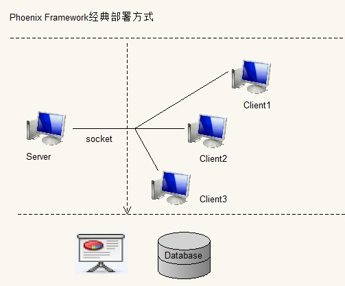

经典部署方式只适用于Windows系统，因为需要安装Exe程序且适用到了系统的一些内部函数。下面讲解一下该模式的部署方式。
经典部署模式说明
部署图：

部署图说明，服务端、客户端、存储层为相互分离的独立模块。
测试报告的数据也是存储在数据库中，但如果生成了报告实体，则会在服务端体现。
测试报告是由测试客户端生成的。当然服务端自己也是客户端，也可以进行测试，适用于本地测试的情形。此时，测试报告是由服务端自己生成的。
无论客户端还是服务端，在执行过程中，都会连接同一数据库。服务端与客户端通信协议为Socket协议，客户端在执行过程中，如果服务端开启监控，则会实时向服务端报告自己的执行情况。
经典部署模式讲解完毕，如果有疑问，请到 心得交流区 提交您的留言。